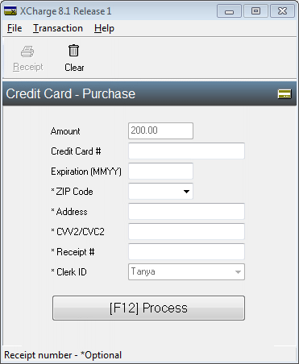

XCharge (OpenEdge)
XCharge is an integrated payment processor that allows practices to process credits and debit card payments directly in Open Dental.
In the Payment window, in the Credit Card Payment area, click XCharge.
- XCharge (OpenEdge) was a previous option available through Global Payments Integrated. Existing XCharge installations can still be used, though Global Payments Integrated no longer supports XCharge. Users should contact Global Payments Integrated to switch to EdgeExpress, their updated payment processing option.
- Open Dental Cloud users are required to use EdgeExpress over XCharge.
XCharge Transaction Types
Select the transaction to process (e.g., Purchase, Return, Void, etc.).
Transaction Types: Refer to the XCharge user manual for details on transaction types.
- Purchase: A standard credit card charge. Credit Card Payment
- Return: Credits the amount of the transaction to the card. Credit Card Return
- Void: Reverse a sale soon after (same day) it was made. XCharge Void Payment
Save Token: Check to securely store the credit card number and expiration date as a token for future use. Set the default in Preferences, Automatically store credit card tokens.
Prompt for Signature: Check to prompt patients for a signature on the credit card terminal before completing transaction. Terminal must support electronic signature capabilities. Set as the default in XCharge Setup.
Print Receipt: Check to automatically print a receipt to the default receipt Printer when the transaction is completed. Set the default setting in XCharge Setup.
XCharge Release
This window appears after the XCharge Transaction Types when charging a new card or voiding a transaction. Enter the credit card details or swipe the credit card to auto insert the information.
Toolbar: Refer to the XCharge user manual for details.
Clear: Clears the information entered in the fields below.
Amount: The purchase amount entered in the Payment window. To edit, cancel the transaction and enter the correct amount in the Payment window.
Credit Card #: Type the credit card number or swipe the credit card to auto-populate this field.
Expiration (MMYY): Type the credit card expiration date. Auto-populates when a card is swiped.
Zip Code: (optional) Enter the zipcode of the cardholder's billing address . Some banks require this information and decline the transaction if not entered.
Address: (optional) Enter the street address of the cardholder's billing address . Some banks require this information and decline the transaction if not entered.
CVV2/CVC2: (optional) Enter the 3-digit security code from the back of the VISA or MasterCard .
Receipt #: Auto-populated by XCharge. This is PAT followed by the patient's ID number assigned by Open Dental (e.g., PAT7453).
Clerk ID: The user logged into Open Dental. To edit, cancel the transaction and log into Open Dental as a different user.
[F12] Process: Click to complete the transaction, or select the F12 key.
EMV Transactions
To process transactions for credit cards with computer chips (EMV transactions) use XCharge version 8.1.1 or greater and a compatible terminal. Terminal options include:
- Ingenico iSC250 (electronic signature capabilities). Electronic signatures are stored on the workstation that acts as the XCharge server.
- Ingenico iPP320
- Ingenico iCMP (Bluetooth capable)
Decline Minimizer
Decline minimizer is a feature that automatically updates expired and outdated card information to reduce declined payments (for participating credit card brands). The decline minimizer automatically updates the credit card information stored in Credit Card Manage. The XC Account ID Updated is noted in the payment note transaction details when card details are updated.
To add this feature at no additional cost, contact XCharge. No additional set up is required in Open Dental.
Additional Resources
XCharge, also known as OpenEdge or Global Payments, is an integrated credit card program that can be used to process credit and debit card transactions. To also process check payments, sign up for the OpenEdge check service.
Website: https://lp.globalpaymentsintegrated.com/opendental/
United States:
- Sales: 800-637-8268
- Technical Support: 800-338-6614
Canada: 800-338-6614
Related Links:
XCharge Setup
XCharge Setup for Clinics
Credit Card Payment
Credit Card Return
XCharge Void Payment
XCharge Add Card
Credit Card Transaction Details
Online Payments
CC Recurring Charges
XCharge Troubleshooting